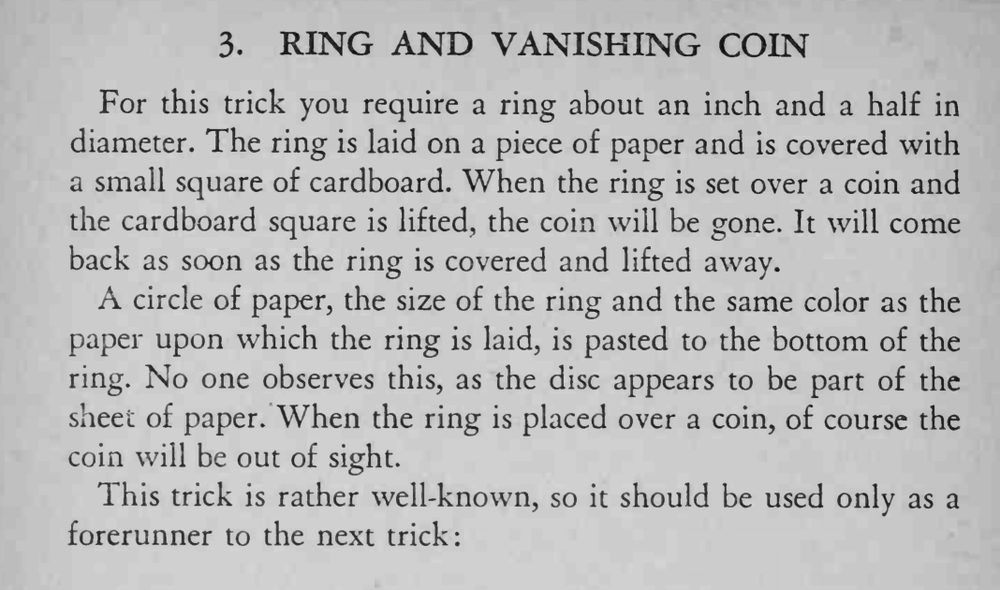

戒指放在纸上，用纸板一盖；把戒指罩到硬币上再掀开纸板，硬币不见了；再盖一下，硬币又回来了。
圆纸片的颜色必须和垫纸完全一致；这招太有名，最好只当作下一招的引子。

For this trick you require a ring about an inch and a half in diameter. The ring is laid on a piece of paper and is covered with a small square of cardboard. When the ring is set over a coin and the cardboard square is lifted, the coin will be gone. It will come back as soon as the ring is covered and lifted away. circle of paper, the size of the ring and the same color as the paper upon which the ring is laid, is pasted to the bottom of the ring. No one observes this, as the disc appears to be part of the sheet of paper. When the ring is placed over a coin, of course the coin will be out of sight. This trick is rather well-known, so it should be used only as a forerunner to the next trick: